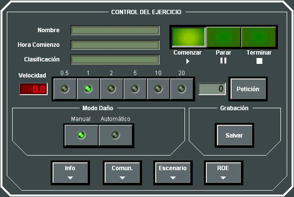
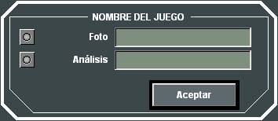

Control del Ejercicio
Pulsando el botón Ejercicio de los Indicadores Generales de la Pantalla de Control, el Instructor puede acceder al siguiente diálogo para controlar el Ejercicio:

En esta ventana se muestra el Nombre, Hora de Comienzo y Clasificación del Ejercicio en Ejecución, y desde ella el Instructor puede acceder a la siguiente funcionalidad:

El operador deberá seleccionar el tipo de grabación: modo Foto (se graba un instante del juego) o modo Debriefing (se graban todas las acciones realizadas desde el inicio del juego hasta el instante actual) e introducir el nombre del fichero (modo Foto) o directorio (modo Debriefing) con el que se grabará.
El modo fotografía está siempre disponible, mientras que el modo continuo sólo puede utilizarse si se ha activado la grabación automática (ver Manual de Análisis – Grabación de Ejercicios).
Ver apartados correspondientes.